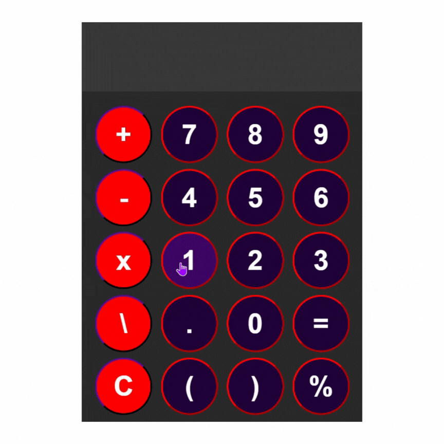
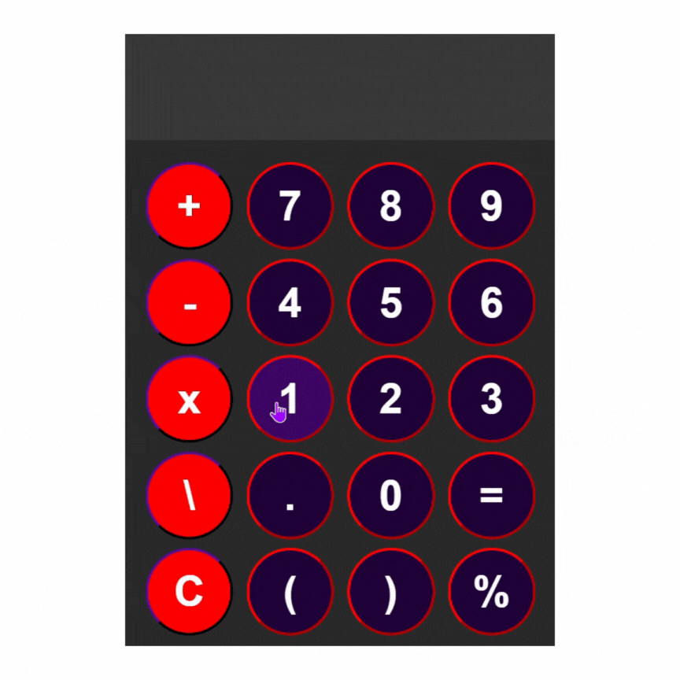
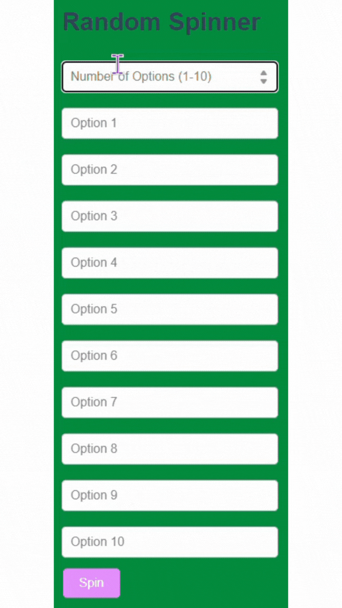
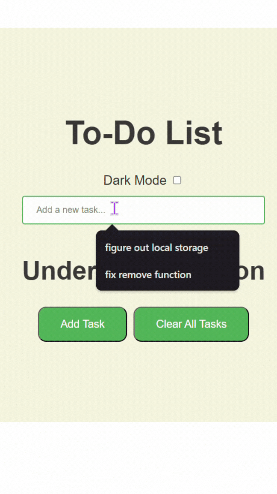
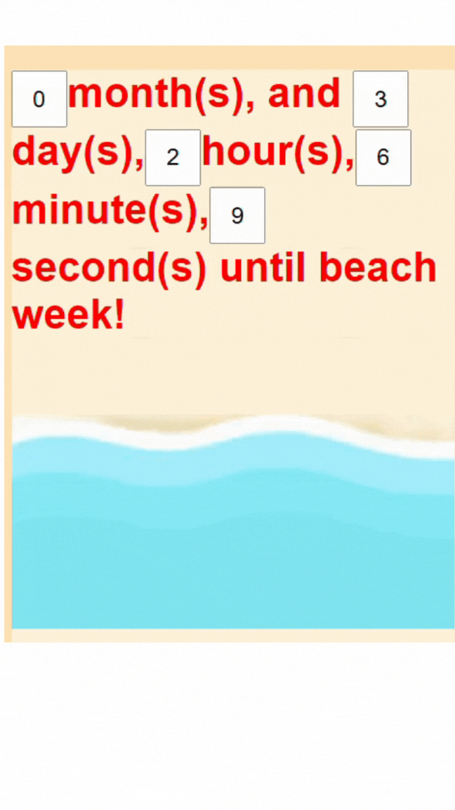

About Me
Hello! I'm Zaid, a web developer who creates functional web applications.
I'm 12 years old, and I've been coding for almost a year now.
I like to use JavaScript to create functional web applications.
I started coding with Tynker, where I learned the basics of programming.
I then used Tynker's code editor to create some simple web pages, such as:
a page about my pets, a photo gallery, a page with a bunch of chickens and a video of chickens, a page with all my favorite YouTube videos, and other fun projects.
I then started reading books about coding and learned more about HTML, CSS, and JavaScript.
I made an animated poster for Eid Day using CSS animations, and later on, I started developing web applications using JavaScript.
Now, I'm working on a portfolio to showcase all my projects.
I am currently creating web applications and learning new things as I build them.
Projects
Check out some of my projects below:
 



 
Contact Me
My Email is devzaid77@gmail.com